Turn-by-turn on your wrist
See the next turn and how far away it is at a glance. Distinct haptics for left and right mean you rarely need to look, and if you wander off, an arrow points you back to the line.
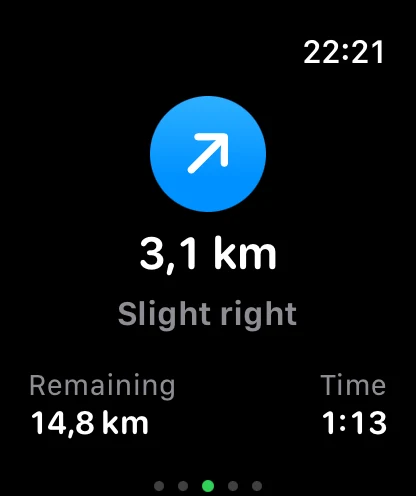
For Apple Watch & iPhone
RouteTrace turns a GPX file into turn-by-turn guidance on Apple Watch, with offline maps, a live altitude profile and workouts saved to Apple Health.
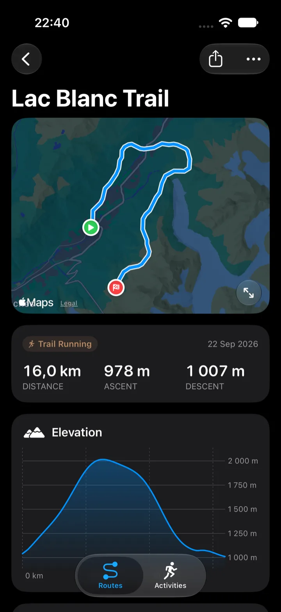
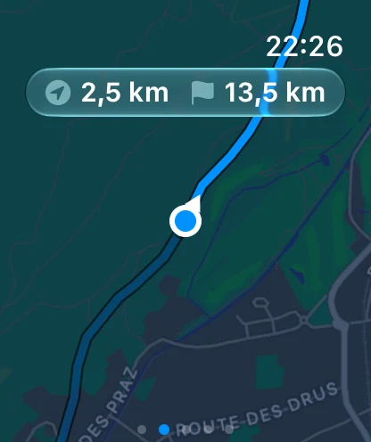
How it works
Open a .gpx file from Files, Safari or your favourite route planner. Preview the line, the distance and the climb before you save it.
Routes, and offline map tiles if you want them, transfer in the background, even while your watch is asleep.
Pick the route on your wrist and go. RouteTrace taps you before each turn and lets you know when you drift off course.
Features
See the next turn and how far away it is at a glance. Distinct haptics for left and right mean you rarely need to look, and if you wander off, an arrow points you back to the line.

Your iPhone prepares a corridor of map tiles along the route and sends it to your Watch, so the map keeps working without signal.
A colour-coded profile shows where you are, how steep it gets and how much ascent remains. Scrub ahead with the Digital Crown.
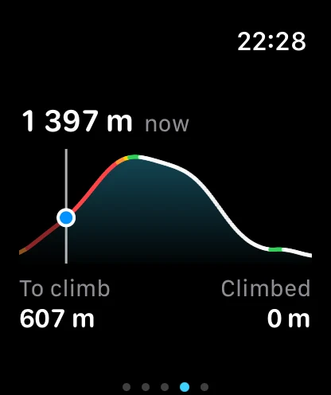
Time, distance, pace and heart rate in big, glanceable numbers. Every session is saved to Apple Health with its route.
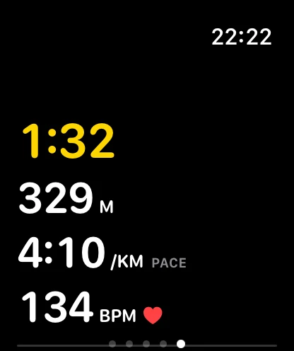
Back on iPhone, each activity has its map, elevation and heart-rate charts. Export any of them as GPX.
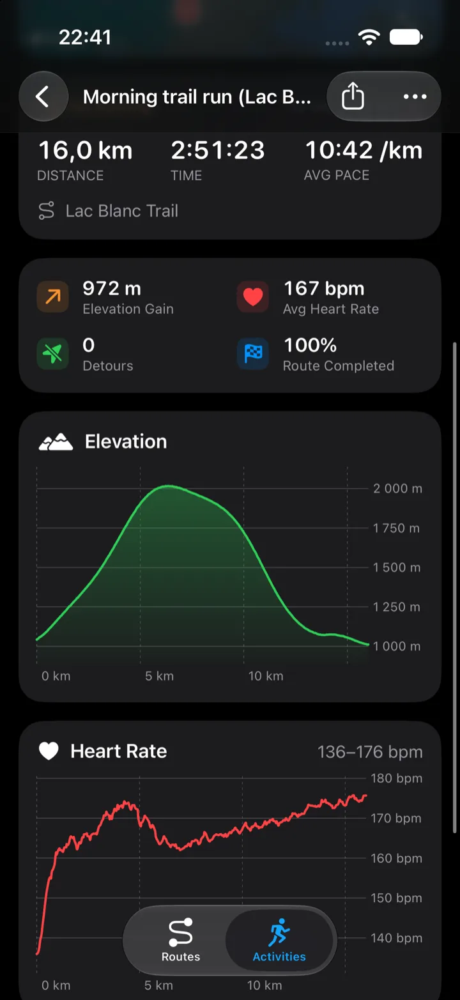
Battery modes trade GPS precision and screen updates for more time on long days out.
Progress stays glanceable on the Always-On display, in complications and in the Smart Stack.
Reverse a route with one tap and run it the other way round. Cues and climbs update too.
No account and no analytics. Routes stay on your devices and in your own iCloud.
Apple Watch
Swipe between map, directions, altitude, metrics and controls while you move. Big type, high contrast, and the Digital Crown where it helps.
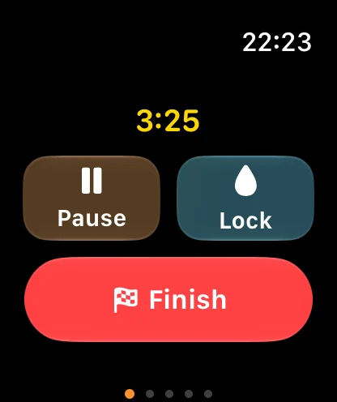
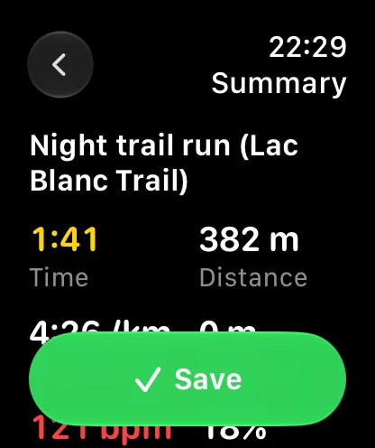
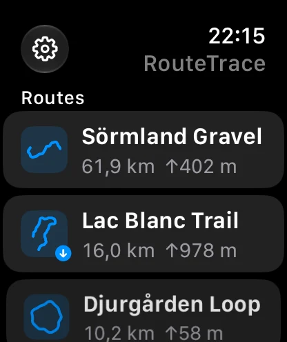
iPhone
Your route library lives on iPhone. Check the line and the climb, pick the activity, prepare offline maps, and find every finished activity waiting with its map and charts.
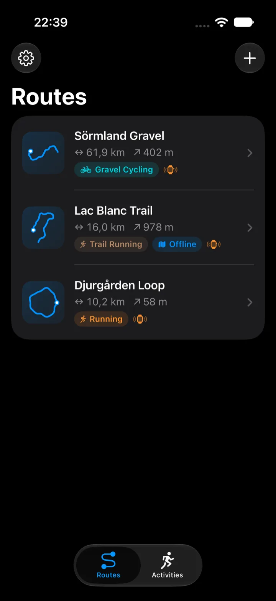
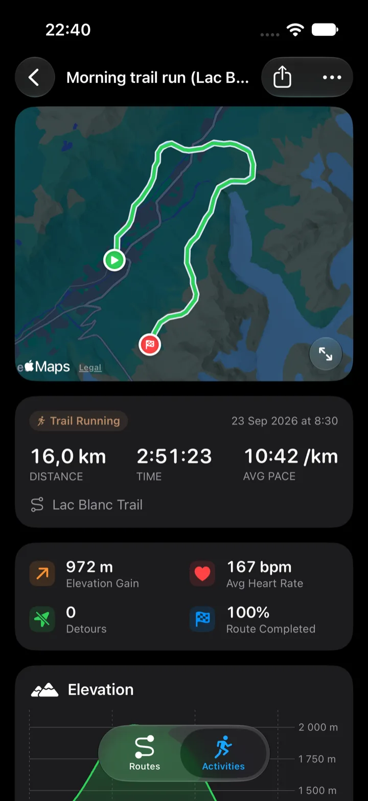
RouteTrace is a native SwiftUI app for iOS 26 and watchOS 26. Browse the code, open an issue, or build it yourself with Xcode.